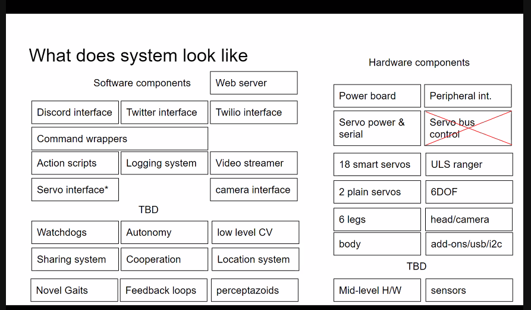

Your twitter archive
Today's featured yak: Jordan Peacock (@hewhocutsdown) - CEO, Becoming Machinic; Founder, Sortilege https://www.yakcollective.org/members/peacock-jordan/#20210801
 Sun Aug 01 16:05:10 +0000 2021
Sun Aug 01 16:05:10 +0000 2021
Check out @antlerboy's new post, "Exiting from stress". https://antlerboy.medium.com/exiting-from-stress-c6753d3b912f?source=rss-97852f5a56ae------2
Mon Aug 02 07:18:29 +0000 2021
Today's featured yak: Chris Clark (@chrisclark1729) - Freelance Data Projects https://www.yakcollective.org/members/clark-chris/#20210802
Mon Aug 02 07:24:50 +0000 2021
Today's featured yak: Kannen Ramsamy - Writer | Communications | Policy
https://www.yakcollective.org/members/ramsamy-kannen/#20210803
Tue Aug 03 16:09:41 +0000 2021
Check out @antlerboy's new post, "Is your team or organisation a ‘robust system’?". https://antlerboy.medium.com/is-your-team-or-organisation-a-robust-system-b43221e287a3?source=rss-97852f5a56ae------2
Wed Aug 04 07:23:08 +0000 2021
Today's featured yak: Alex Dobrenko (@Dobrenkz) - Improviser / Writer / Filmmaker https://www.yakcollective.org/members/dobrenko-alex/#20210804
Wed Aug 04 07:29:32 +0000 2021
Check out @antlerboy's new post, "Something new has been named: #systemsconvening". https://antlerboy.medium.com/something-new-has-been-named-systemsconvening-f7c468315be3?source=rss-97852f5a56ae------2
Thu Aug 05 12:28:31 +0000 2021
Today's featured yak: Shreeda Segan (@freeshreeda) - Design Thinker & Writer https://www.yakcollective.org/members/segan-shreeda/#20210805
Thu Aug 05 12:34:47 +0000 2021
Today's featured yak: Anne-Laure Le Cunff (@anthilemoon) https://www.yakcollective.org/members/le-cunff-anne-laure/#20210806
Fri Aug 06 15:18:56 +0000 2021
Check out @antlerboy's new post, "Transduction — leading transformation — Issue #9". https://antlerboy.medium.com/transduction-leading-transformation-issue-9-c9f3894dbc42?source=rss-97852f5a56ae------2
Sat Aug 07 07:08:41 +0000 2021
Today's featured yak: Shreeda Segan (@freeshreeda) - Design Thinker & Writer https://www.yakcollective.org/members/segan-shreeda/#20210807
Sat Aug 07 07:13:56 +0000 2021
Today @jdbb, @anurajenp, and @nathan_acks worked on improving the link list generation process for the Yak Trails newsletter. #yakbot
Sat Aug 07 17:47:06 +0000 2021
Today's featured yak: Michael de la Maza https://www.yakcollective.org/members/de-la-maza-michael/#20210808
Sun Aug 08 16:09:18 +0000 2021
Today's featured yak: Sumit Paul-Choudhury https://www.yakcollective.org/members/paul-choudhury-sumit/#20210809
Mon Aug 09 16:04:28 +0000 2021
Check out @anthilemoon's new post, "Exploring the power of note-making with the co-founder of Obsidian". https://nesslabs.com/obsidian-featured-tool?utm_source=rss&utm_medium=rss&utm_campaign=obsidian-featured-tool
Mon Aug 09 16:30:18 +0000 2021
Check out @evanwolf's new post, "Recap: User Experience in SSI (IIW UX) July 2021". https://wider.team/2021/08/09/iiwux2021/
Mon Aug 09 20:30:59 +0000 2021
Check out @antlerboy's new post, "The Peter Block Community Exercise — connection, gifts, community: better than ‘a warmup’". https://antlerboy.medium.com/the-peter-block-community-exercise-connection-gifts-community-better-than-a-warmup-413e89432fc0?source=rss-97852f5a56ae------2
Tue Aug 10 10:38:05 +0000 2021
Today's featured yak: Nathan Acks (@nathan_acks) - Armchair futurist. Defense against the dark arts. https://www.yakcollective.org/members/acks-nathan/#20210810
Tue Aug 10 10:45:04 +0000 2021
Check out @anthilemoon's new post, "Eliminating bias in online education with the founder of Learnopoly". https://nesslabs.com/learnopoly-featured-tool?utm_source=rss&utm_medium=rss&utm_campaign=learnopoly-featured-tool
Tue Aug 10 14:00:46 +0000 2021
Check out @antlerboy's new post, "Long live commissioning! But what shall we call it?". https://antlerboy.medium.com/long-live-commissioning-but-what-shall-we-call-it-caf25d141d47?source=rss-97852f5a56ae------2
Wed Aug 11 06:53:41 +0000 2021
Today's featured yak: Jay Kalawar https://www.yakcollective.org/members/kalawar-jay/#20210811
Wed Aug 11 06:55:17 +0000 2021
Check out @anthilemoon's new post, "Emotional exhaustion: a leading indicator of burnout". https://nesslabs.com/emotional-exhaustion?utm_source=rss&utm_medium=rss&utm_campaign=emotional-exhaustion
Wed Aug 11 09:40:36 +0000 2021
Check out @antlerboy's new post, "What does the shift to the collective journey mean to you?". https://antlerboy.medium.com/what-does-the-shift-to-the-collective-journey-mean-to-you-4b85afdcab44?source=rss-97852f5a56ae------2
Thu Aug 12 12:28:39 +0000 2021
Today's featured yak: Erik Sandberg https://www.yakcollective.org/members/sandberg-erik/#20210812
Thu Aug 12 12:34:23 +0000 2021
Today's featured yak: Michael Colin (@divinix_chi) - Supply Chain; Logistics; Freight Tech https://www.yakcollective.org/members/colin-michael/#20210813
Fri Aug 13 16:05:28 +0000 2021
Check out @antlerboy's new post, "Transduction — leading transformation — Issue #10". https://antlerboy.medium.com/transduction-leading-transformation-issue-10-577f765175a2?source=rss-97852f5a56ae------2
Sat Aug 14 08:39:05 +0000 2021
Today's featured yak: Grigori Milov https://www.yakcollective.org/members/milov-grigori/#20210814
Sat Aug 14 08:45:49 +0000 2021
Check out @antlerboy's new post, "Why we need #metaconsulting". https://antlerboy.medium.com/why-we-need-metaconsulting-1fc76249bef6?source=rss-97852f5a56ae------2
Mon Aug 16 07:08:29 +0000 2021
Check out @evanwolf's new post, "Identity of Things Grand Challenges". https://wider.team/2021/08/16/grandchallenges/
Mon Aug 16 16:05:56 +0000 2021
Check out @antlerboy's new post, "Speaking gigs — what do you think?". https://antlerboy.medium.com/speaking-gigs-what-do-you-think-dda953097ca5?source=rss-97852f5a56ae------2
Wed Aug 18 09:43:50 +0000 2021
Today's featured yak: Nathan Chen (@iam_nChen) https://www.yakcollective.org/members/chen-nathan/#20210818
Wed Aug 18 09:54:08 +0000 2021
Check out @anthilemoon's new post, "The MoSCoW method of prioritization". https://nesslabs.com/moscow-method?utm_source=rss&utm_medium=rss&utm_campaign=moscow-method
Thu Aug 19 06:20:34 +0000 2021
Today's featured yak: Vlad Mehakovic (@vladiim) https://www.yakcollective.org/members/mehakovic-vlad/#20210819
Thu Aug 19 06:29:18 +0000 2021
Check out @antlerboy's new post, "There’s been a kerfuffle about ‘stage theory’. What do you think?". https://antlerboy.medium.com/theres-been-a-kerfuffle-about-stage-theory-what-do-you-think-433151f4ef47?source=rss-97852f5a56ae------2
Thu Aug 19 13:08:16 +0000 2021
Check out @chrizbot's new post, "Communal computing, part 3". https://chrizbot.medium.com/communal-computing-part-3-82a1a49d80ac?source=rss-ba6349c9c628------2
Thu Aug 19 15:12:27 +0000 2021
Today's featured yak: Thomas Verhagen (@thomasverhagen) https://www.yakcollective.org/members/verhagen-thomas/#20210820
Fri Aug 20 16:09:28 +0000 2021
Today's featured yak: Victor Hill https://www.yakcollective.org/members/hill-victor/#20210821
Sat Aug 21 16:09:32 +0000 2021
Check out @antlerboy's new post, "Transduction — leading transformation — Issue #11". https://antlerboy.medium.com/transduction-leading-transformation-issue-11-d3f7c33e0236?source=rss-97852f5a56ae------2
Sat Aug 21 19:53:30 +0000 2021
Today's featured yak: Kannen Ramsamy - Writer | Communications | Policy
https://www.yakcollective.org/members/ramsamy-kannen/#20210822
Sun Aug 22 16:04:34 +0000 2021
Check out @antlerboy's new post, "I’m proud of RedQuadrant". https://antlerboy.medium.com/im-proud-of-redquadrant-ab5ce04b7cb7?source=rss-97852f5a56ae------2
Mon Aug 23 06:43:20 +0000 2021
Today's featured yak: Tracy Brinkerhoff https://www.yakcollective.org/members/brinkerhoff-tracy/#20210823
Mon Aug 23 06:44:21 +0000 2021
Today's featured yak: Praful Mathur https://www.yakcollective.org/members/mathur-praful/#20210824
Tue Aug 24 16:09:33 +0000 2021
Check out @antlerboy's new post, "Systems convening". https://antlerboy.medium.com/systems-convening-85d96b3e9bc0?source=rss-97852f5a56ae------2
Wed Aug 25 07:23:24 +0000 2021
Today's featured yak: Benjamin Taylor (@antlerboy) https://www.yakcollective.org/members/taylor-benjamin/#20210825
Wed Aug 25 07:29:41 +0000 2021
Today's featured yak: Prashant Gandhi https://www.yakcollective.org/members/gandhi-prashant/#20210826
Thu Aug 26 16:04:33 +0000 2021
talking about Ise Jingu in today’s governance chat https://theprepared.org/features-feed/ise-jingu-and-the-pyramid-of-enabling-technologies #yakbot
Fri Aug 27 16:04:16 +0000 2021
Today's featured yak: Harry Pottash - Philosopher & Investor https://www.yakcollective.org/members/pottash-harry/#20210827
Fri Aug 27 16:09:48 +0000 2021
Check out @antlerboy's new post, "Transduction — leading transformation — Issue #12". https://antlerboy.medium.com/transduction-leading-transformation-issue-12-ed34cde17899?source=rss-97852f5a56ae------2
Sat Aug 28 07:43:31 +0000 2021
Today's featured yak: Sachin Benny (@sachinb91) https://www.yakcollective.org/members/benny-sachin/#20210828
Sat Aug 28 07:49:24 +0000 2021
Today's featured yak: Randy Lubin (@randylubin) https://www.yakcollective.org/members/lubin-randy/#20210829
Sun Aug 29 16:05:01 +0000 2021
Check out @antlerboy's new post, "I’m in a quandary.". https://antlerboy.medium.com/im-in-a-quandary-644b6641ab5?source=rss-97852f5a56ae------2
Mon Aug 30 06:48:06 +0000 2021
Today's featured yak: Siva Swaroop https://www.yakcollective.org/members/swaroop-siva/#20210830
Mon Aug 30 06:54:45 +0000 2021
Status of @maierfenster Yak Rover build, a 6-legged hexapod robot.

Tue Aug 31 05:00:49 +0000 2021
Check out @chrizbot's new post, "Product ops is about creative destruction". https://chrizbot.medium.com/product-ops-is-about-creative-destruction-ea967d0e84d2?source=rss-ba6349c9c628------2
Tue Aug 31 16:02:08 +0000 2021
Today's featured yak: Alex Dobrenko (@Dobrenkz) - Improviser / Writer / Filmmaker https://www.yakcollective.org/members/dobrenko-alex/#20210831
Tue Aug 31 16:09:30 +0000 2021